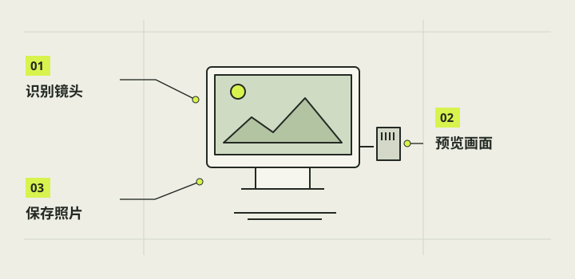

首次预览与拍照验证
拍照验证要看到实时画面和可打开的 JPG，不能只凭系统识别相机。先在树莓派上用官方相机工具建立基线；已公开的 自制相机 1.0 源码和归档是原设备参考，触屏、图库与保存回归在匹配并适配后另做。

本章完成目标
- 看到真实取景并记录方向
- 用官方工具生成一张能打开的 JPG
- 匹配应用发布后再核对触屏、图库与保存
开始前准备好
- 第05章连接供电检查完成，第06章系统能稳定启动
- 已安装适用的官方相机工具，摄像头可识别；缺失时查镜像官方文档
- 准备光线稳定的测试物和可用存储空间；自制相机应用测试另需匹配的正式发行包
- 预览
- 传感器连续提供的构图画面，尚不等于照片已保存。
- JPG
- 相机写入的独立图像文件，可用图片查看器打开。
- 回显
- 拍摄后短暂显示刚保存照片的界面反馈。
确认镜头空闲与工具
在本机桌面确认旧版相机或其他拍照工具已正常退出，避免两个程序抢占镜头。先核对官方相机工具是否存在；若系统没有该工具，不照搬其他镜像的安装命令，应记录系统版本并查官方适配说明。当前公开仓库尚无可复现的 自制相机应用发行包，不运行内部 Mac 安装器。
用官方工具观察预览
在已安装 rpicam 工具、具有本地图形显示的树莓派上运行官方预览命令。把镜头对准有明暗和边缘的静止物，轻微移动相机，看画面是否随实景变化；记录方向、镜像、显示范围和卡顿。预览完成后按界面提示退出，避免它继续占用镜头。黑色背景或静止样张不能代替实时预览。
rpicam-hello用官方工具拍一张 JPG
在同一终端用官方 JPG 拍摄命令，选择一个不会覆盖既有照片的测试文件名。等待预览和拍摄结束，再查看终端是否返回错误；官方文档说明该工具会先预览再写入高分辨率 JPG。不要在保存期间断电或取卡。此张照片只验证系统相机链，不证明 自制相机应用快门与图库已经通过。
rpicam-jpeg --output first-test.jpg注意 / 文件名若已存在，先换新名字，不覆盖原照片。
在文件层核对结果
在文件管理器中找到刚才生成的测试 JPG，用系统图片查看器打开，观察方向、清晰区域和完整边缘。文件真实存在、大小不为零且可解码，是比预览或终端提示更强的完成标志。若使用的镜像没有桌面，可按第07章把文件复制到电脑核对；不要把此步骤误记成应用图库验收。
发行包匹配后再验应用
先阅读仓库 software/README.md，核对原设备的系统、账户路径、启动链和接口条件；只有实际完成本机适配并安装成功后，才从树莓派本地桌面打开应用，按一次屏幕快门并等待保存，再在图库与文件夹核对同一张照片。逐张拍两三张不同构图，记录触控、预览恢复和数量。未完成适配时标为“待适配”，不要直接执行原设备专用的 Mac 安装入口。
完成后，逐项打勾。
勾选帮助你记录进度，不代表项目替你完成了实机验收。
遇到问题，从这里排查。
官方工具找不到或预览不动
核对镜像、工具、遮挡和设备识别，记录错误，不猜单一原因。
官方 JPG 可打开，但应用没有照片
先确认匹配发行包，再核对目录、空间、权限和应用日志。
本项目的实际进展
- 2026-10-14 旧版 v0.2.0 有真实诊断 JPG 和用户基本拍照反馈；图库、触控和重启保留未逐项验收。
- New Cam 1.0.0 继承 0.4.0 拍照功能；00:50:57 实机报告仅证实配置，未包含开机后的预览和拍照。
资料与核对依据
- C 最新交接与历史实机拍照 · camera-project/C-软件/handoff.md
- New Cam 1.0 验证边界 · camera-project/C-软件/pi-camera-1.0/TESTING.md
- New Cam 1.0 功能状态 · camera-project/C-软件/pi-camera-1.0/feature-status.md
- 树莓派官方相机软件 ↗
资料核对日期：2026-10-30。不同硬件、系统版本和材料需要重新验证。